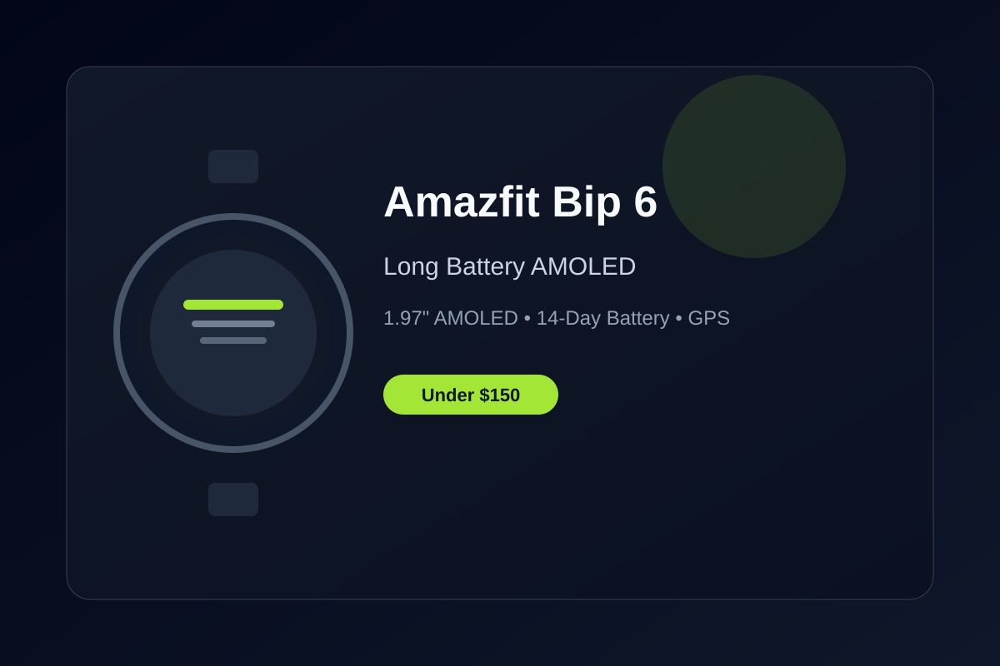

Amazfit Bip 6 Review: Long Battery and Bright AMOLED Under $150
The Amazfit Bip 6 delivers weeks of battery life, a large AMOLED screen, and reliable GPS tracking without breaking the bank.
Budget smartwatches often force a choice between battery life and features. The Amazfit Bip 6 largely removes that trade-off. Priced well under $150—often around $70—it packs a large 1.97-inch AMOLED display, built-in GPS, and battery life that regularly stretches past two weeks with normal use.
The display is one of the biggest strengths. At nearly two inches with strong brightness, it stays readable outdoors and makes notifications, workout stats, and watch faces easy to scan. Touch response is snappy for the price, and the always-on option is practical without destroying the battery numbers Amazfit advertises.
Fitness tracking covers the essentials and more. Continuous heart rate, SpO2, sleep stages, stress, and over 140 workout modes are included. Built-in GPS with offline maps support is particularly useful for runners and hikers who do not want to carry a phone the entire time. Accuracy is solid for everyday training rather than elite racing.
Bluetooth calling and text replies add convenience when your phone is nearby but not in hand. The Zepp app is straightforward for syncing data, though it lacks the polish of Apple or Samsung ecosystems. Software updates have been consistent for Amazfit devices in this range, which helps the watch stay relevant longer.
If you want a lightweight, capable smartwatch that prioritizes battery endurance, outdoor readability, and basic smart features without daily charging, the Amazfit Bip 6 is one of the strongest options under $150 right now.
Key Takeaways
- Price Range: ~$70 – $80 (Amazon)
- Display: 1.97-inch AMOLED with high brightness
- Battery: Up to 14 days typical use
- Features: Built-in GPS, offline maps, 140+ sports modes, Bluetooth calling